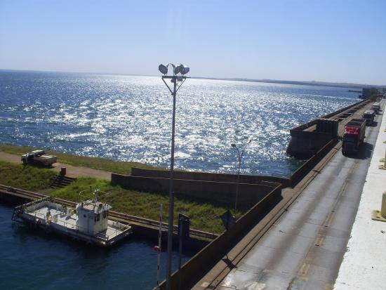

O Rio Paraná é um dos mais importantes rios da América do Sul e exerce grande influência na vida de Três Lagoas. Com sua imensidão e beleza natural, o rio se destaca como um dos principais atrativos da região, oferecendo paisagens marcantes e diversas possibilidades de lazer. Muito procurado por pescadores, o Rio Paraná é conhecido pela variedade de peixes, sendo um destino popular para a pesca esportiva. Além disso, suas margens são ideais para momentos de descanso, piqueniques e contemplação da natureza, atraindo tanto moradores quanto turistas. O rio também é fundamental para a economia local, contribuindo para atividades como transporte e geração de energia, além de estar ligado ao desenvolvimento da região. Sua presença reforça a importância ambiental, abrigando diferentes espécies de fauna e flora. Um dos momentos mais especiais para visitar o Rio Paraná é ao amanhecer, quando o nascer do sol cria uma paisagem tranquila e impressionante, perfeita para fotos e momentos de reflexão. No fim da tarde, o pôr do sol também oferece um espetáculo à parte, com cores que se refletem nas águas.
